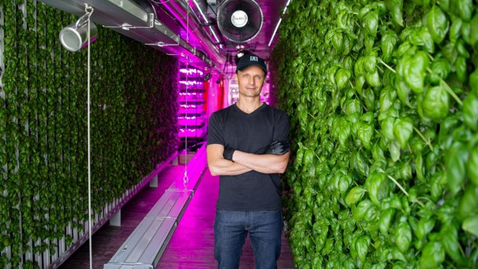

E00 - Fabricación Digital
El siguiente post tiene como objetivo documentar algun tema del texto llamado Desing Remix Share Repeat que me haya cautivado o llamado la atención. El concepto que mas me gusto del texto es el que se hace mencion en el capitulo 4, donde se comienza a desarrollar el tema de los FabLabs y el nuevo ecosistema y paradigmas de las plataformas que existen hoy en dia, de creación y difusión del diseño.
Agricultura Inteligente
El boom de los FarmBots

Segun expertos la mejor albahaca del mundo proviene de Génova, Italia. Square Roots, cultiva semillas genovesas en un container que recrea las horas de luz de día de la ciudad, la humedad, los niveles de CO2 y utiliza agua rica en nutrientes que permiten el crecimiento hidropónico del producto.
En lugar de enviar alimentos a todo el mundo, enviamos los datos climáticos y los incorporamos a nuestro sistema operativo", dice el cofundador de Square Robots Tobias Peggs.
Actual FabLab (FarmBot) mas grande de Europa


Esto nos plantea una nueva forma de cultivar los alimentos por los habitamtes de las ciudades. Y nueva formas de combatir contra la descentralización. Para asi poder tener economias mas distribuidas. Esto nos lleva a preguntarnos como sera la nueva revolución agricola, la cual evidenetemente comenzó. Y como las grandes ciudades van a ser los protagonistas de ella.

Hay una serie de ventajas las cuales presenta la agricultura vertical:
- Consume hasta un 95% menos de agua que los cultivos tradicionales.
- Alto Rendimiento
- Rendimiento practicamente al 100% al ser un ambiente controlado.
- Las ortalizas pueden ser cosechadas los 365 del año.
- Es una industria la cual proyecta un crecimiento de 1400% para 2024.
- Usa el suelo de manera mucho mas eficiente que los cultivos tradicionales
- Ofrece productos 100% organicos, sin pesticidas
- Amplia las la cantidad y variedad de frutas y verduras que se pueden generar en una zona.
Empresa URBAN CROPS SOLUTIONS
Agricultura vertical
Conclusiones
De esta menara como se mencionaba el texto. El dia de mañana, no van a viajar los productos de un puerto a otro. Lo que viajará será la información, la cual será descargada y repicada en cada lugar del mundo gracias a un FabLab. Dando paso a una economia global mucho menos centralizada, en donde cada ciudad sera un poco mas independiente de su propio consumo alimenticio. En donde, ademas los paradigmas son completamente diferentes a los de hace un par de año. Por lo que, se postula que gracias a la fabricación de FabLabs al rededor del mundo la agricultura no volvera a ser lo mismo que antes.
Apoyando siempre los principales valores y la mision de la comunidad de los FabLabs, valores tales como:
- La comunidad Colaborativa.
- La filosofia de código abierto.
- Catalizador de nuevo modelo de produccion distribuida.
- Impacto social.
- Economia circular orientada a a innovación abierta.
- Desarrollo de programas educativos.
- Entre otras